Jazz
Jazz is a music genre that originated in the African-American communities of New Orleans, Louisiana, United States, in the late 19th and early 20th centuries, with its roots in blues and ragtime. Since the 1920s Jazz Age, it has been recognized as a major form of musical expression in traditional and popular music, linked by the common bonds of African-American and European-American musical parentage. Jazz is characterized by swing and blue notes, complex chords, call and response vocals, polyrhythms and improvisation. Jazz has roots in European harmony and African rhythmic rituals.

As jazz spread around the world, it drew on national, regional, and local musical cultures, which gave rise to different styles. New Orleans jazz began in the early 1910s, combining earlier brass-band marches, French quadrilles, biguine, ragtime and blues with collective polyphonic improvisation. In the 1930s, arranged dance-oriented swing big bands, Kansas City jazz (a hard-swinging, bluesy, improvisational style), and gypsy jazz (a style that emphasized musette waltzes) were the prominent styles. Bebop emerged in the 1940s, shifting jazz from danceable popular music toward a more challenging "musician's music" which was played at faster tempos and used more chord-based improvisation. Cool jazz developed near the end of the 1940s, introducing calmer, smoother sounds and long, linear melodic lines. The mid-1950s saw the emergence of hard bop, which introduced influences from rhythm and blues, gospel, and blues, especially in the saxophone and piano playing. Modal jazz developed in the late 1950s, using the mode, or musical scale, as the basis of musical structure and improvisation, as did free jazz, which explored playing without regular meter, beat and formal structures. Jazz-rock fusion appeared in the late 1960s and early 1970s, combining jazz improvisation with rock music's rhythms, electric instruments, and highly amplified stage sound. In the early 1980s, a commercial form of jazz fusion called smooth jazz became successful, garnering significant radio airplay. Other styles and genres abound in the 2000s, such as Latin and Afro-Cuban jazz.
Subgenres
- Ragtime[1]
- Bebop
- Afro-Cuban jazz (cu-bop)
- Dixieland revival
- Hard bop
- Modal jazz
- Free jazz
- Latin jazz
- African-inspired
- Sacred and liturgical jazz
- Jazz fusion
- Jazz-funk
- Traditionalism in the 1980s
- Smooth jazz
- Acid jazz, nu jazz, and jazz rap
- Punk jazz and jazzcore
Elements
Improvisation
Although jazz is considered difficult to define, in part because it contains many subgenres, improvisation is one of its defining elements. The centrality of improvisation is attributed to the influence of earlier forms of music such as blues, a form of folk music which arose in part from the work songs and field hollers of African-American slaves on plantations. These work songs were commonly structured around a repetitive call-and-response pattern, but early blues was also improvisational. Classical music performance is evaluated more by its fidelity to the musical score, with less attention given to interpretation, ornamentation, and accompaniment.
The classical performer's goal is to play the composition as it was written. In contrast, jazz is often characterized by the product of interaction and collaboration, placing less value on the contribution of the composer, if there is one, and more on the performer. The jazz performer interprets a tune in individual ways, never playing the same composition twice. Depending on the performer's mood, experience, and interaction with band members or audience members, the performer may change melodies, harmonies, and time signatures.
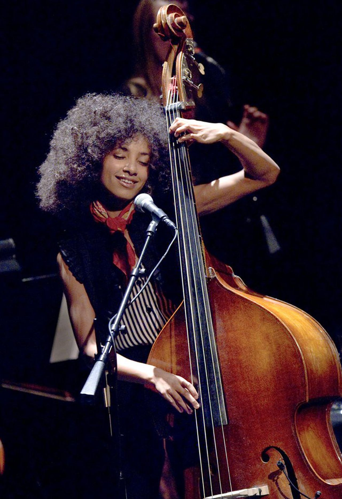Traditionalism
Since the emergence of bebop, forms of jazz that are commercially oriented or influenced by popular music have been criticized. According to Bruce Johnson, there has always been a "tension between jazz as a commercial music and an art form". Regarding the Dixieland jazz revival of the 1940s, black musicians rejected it as being shallow nostalgia entertainment for white audiences. On the other hand, traditional jazz enthusiasts have dismissed bebop, free jazz, and jazz fusion as forms of debasement and betrayal. An alternative view is that jazz can absorb and transform diverse musical styles. By avoiding the creation of norms, jazz allows avant-garde styles to emerge.

Iconic Jazz musicians
Jazz musicians have taken uniquely American music and made it a major global phenomenon. From pioneers like Scott Joplin and Jelly Roll Morton to the big-band sounds of Louis Armstrong and Duke Ellington to vocalists like Billie Holiday, Ella Fitzgerald and Nina Simone, jazz music is one of America’s greatest exports.
 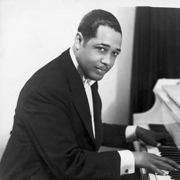
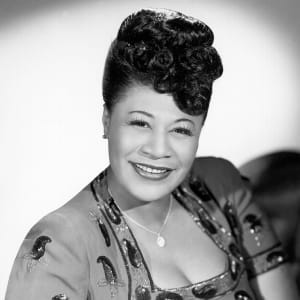
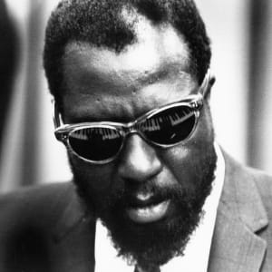
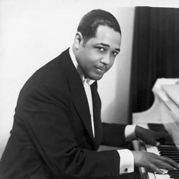
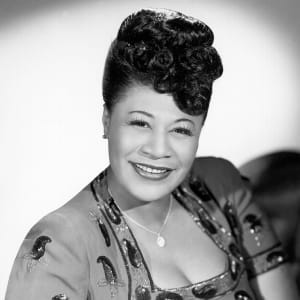
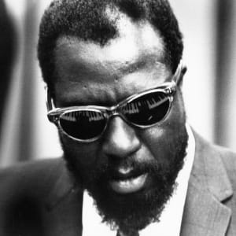
 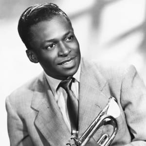
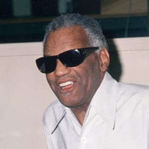
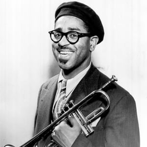
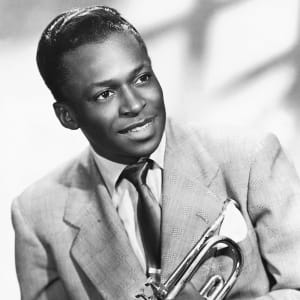
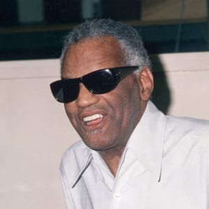
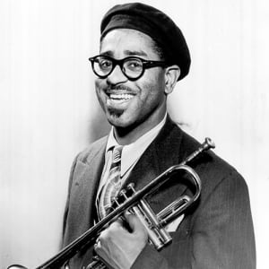
 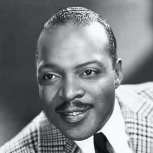
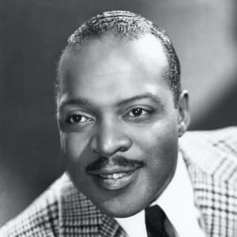
 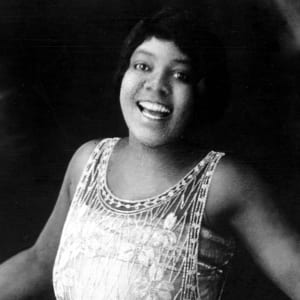
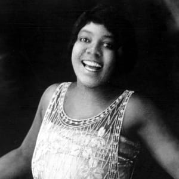
Jazz has continued to maintain widespread appeal thanks to modern jazz musicians and instrumentalists like Keith Jarrett, George Benson, and John Scofield.
To understand jazz music, familiarize yourself with these iconic compositions.
- “It Don’t Mean a Thing (If It Ain’t Got That Swing)” by Duke Ellington (1931): A jazz standard, Irving Mills wrote this song for Ellington in 1931, which featured solos by trombonist Joe Nanton alto saxophonist Johnny Hodges. It was inducted into the Grammy Hall of Fame in 2008.
- "Strange Fruit" by Billie Holiday (1939): The poet Abel Meeropol wrote this song for Holiday to protest the lynchings of Black Americans. In 1999, Time magazine named it the best song of the century.
- "Take Five" by the Dave Brubeck Quartet (1959): Appearing on the album Time Out in 1959, "Take Five" took the world by storm. To this day, the song remains the best-selling jazz single of all time.
- "Blue in Green" by Miles Davis (1959): Featuring John Coltrane on tenor saxophone and Bill Evans on piano, "Blue in Green" is one of three ballads on Davis's definitive 1959 album, Kind of Blue.
- “What a Wonderful World” by Louis Armstrong (1967): Bob Thiele and George David Weiss wrote this song for Armstrong, who recorded and released it to critical acclaim in 1967. Although it didn’t reach widespread popularity in the US for another two decades, it hit the top of the UK charts after its initial release. In 1999, it was inducted into the Grammy Hall of Fame.
Which Instruments are used in Jazz Music?
As with all different genres of music, Jazz music tends to use a certain selection of instruments, known for blending that perfect jazz-style sound that has made the jazz genre so popular and well loved. Jazz is certainly known for a specific sound and style – and that’s what makes the music so well loved.
However, because the genre of jazz music is so flexible and unpredictable, it’s a genre that generally tends to be quite experimental with instrument choices. This means that a lot of modern jazz try to vary their instrumental choices – saying that though, there does tend to be a few instruments that feature in the majority of jazz bands, so we’ll discuss these below in more detail.
Trumpet
Trumpets are well-known in jazz music for creating that bold and bright sound that the genre is well known for. You’ll often find that trumpets can also be swapped out and replaced with cornets too – as they also give that bright sound. Trumpets are relatively inexpensive and you can get playing by either buying new or renting one.
Saxophone
Saxophones are one of the most well known jazz instruments, and the saxophone is often the instrument that springs to mind when imagining a jazz band. Saxophones come in a variety of sizes (if you didn’t know already) which all produce slightly different tones and notes. The most popular size to start on is Alto, then Tenor. This is commonly due to the size, ease of play and available repertoire. You can start playing by simply hiring a Saxophone for a low monthly cost.
Piano
The piano is a flexible instrument that seems to appear in many genres of music across the globe. The flexibility of the instrument makes it a great choice for jazz.
Trombone
The trombone adds a level of theatre to a jazz band, and because of the size of the instrument, it’s often one of the most recognised members of a jazz band too. The trombone was first used in jazz during Dixieland Jazz as a supporting role within the Dixie Group. In fact, the trombone really took off during 1930’s jazz era when the instrument reached peak popularity in the genre. Most players start on a Tenor Trombone (often used primarily in Jazz), then with experience they may add a Bass Trombone or Bb/F model if playing more classically.
Double bass
The double bass is a beautiful (and very large) strong instrument, which has a unique and distinct sound. The double bass is actually larger than the cello, and so requires the players to be standing when playing it. You’ll like see jazz ensembles with a double bass, and the player will be quite the presence on stage, that’s for sure!
The Drums
The drums have always been part of jazz, because the beat and sound of the drums is so integral to the cultural history of where jazz music originated and evolved from. The drums are essentially the rhythm section of the jazz ensemble, and includes the bass drum, snare drum and cymbals.
Electric guitar
As time has gone by, and as jazz music has become more modern and moved with the time, you’ll often now find electric guitars playing in jazz bands too.